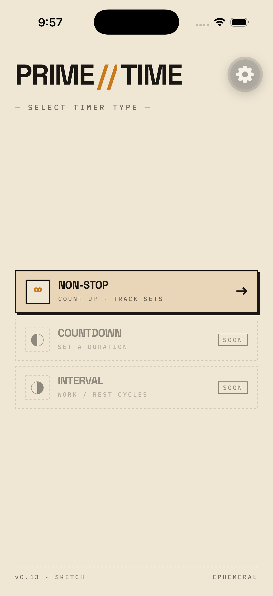
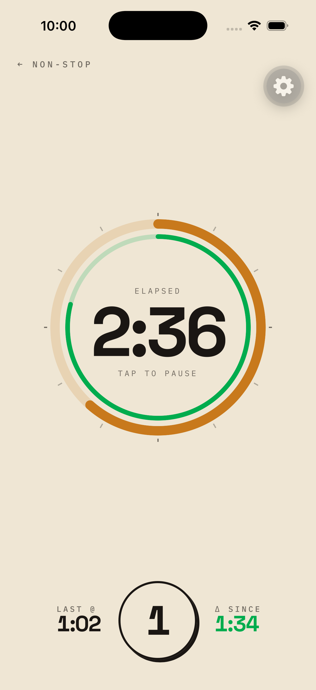
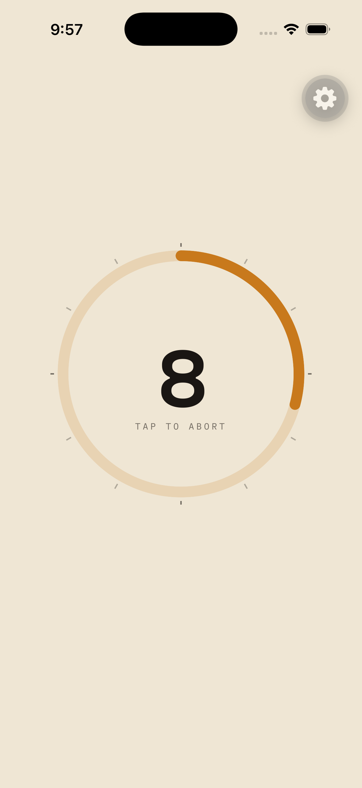
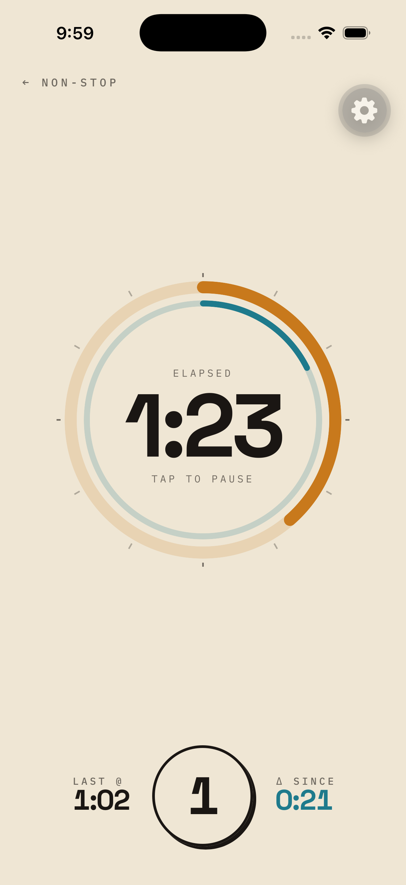
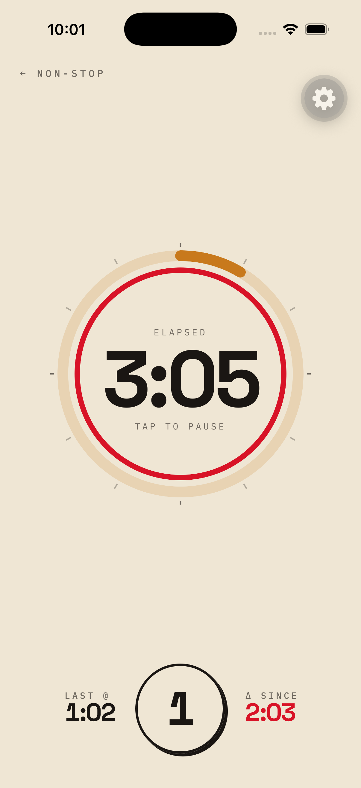

— Frame 01
Pick a mode
Primetime tracks your sets while you train. Your last interval becomes the rhythm — the screen shows, at a glance, whether you're holding it, ahead of it, or slipping.

The outer ring is the time your last set took — your baseline. The inner ring is the set you're in right now. Two arcs, three colors, no math.
You're inside the window of your last set. Keep going — the rhythm is intact.
You've passed your last interval and you're still going. Inner ring catches the outer.
Twice your baseline and counting. Pause, breathe, or push — the screen won't lie about it.
Built for the kind of training where you don't want to scroll, log, or fight with a UI between reps.
Tap to start, tap to mark a set, tap to pause. Your last set becomes the target; everything after measures itself against it.
Orange baseline, teal in-progress, green when you're ahead, red when you're overdue. No graphs, no streaks — just the color you're in.
The session lives while you do it, then it's gone. Show up, train, leave. Nothing follows you home.
Two more modes on the way — a clean duration timer and a work/rest cycler. Same vocabulary, same restraint.
From cold start to overdue, here's how a non-stop set actually looks. Swipe →




Primetime is a small, opinionated timer made by one person. If that sounds like your kind of tool, grab it — or just say hi.